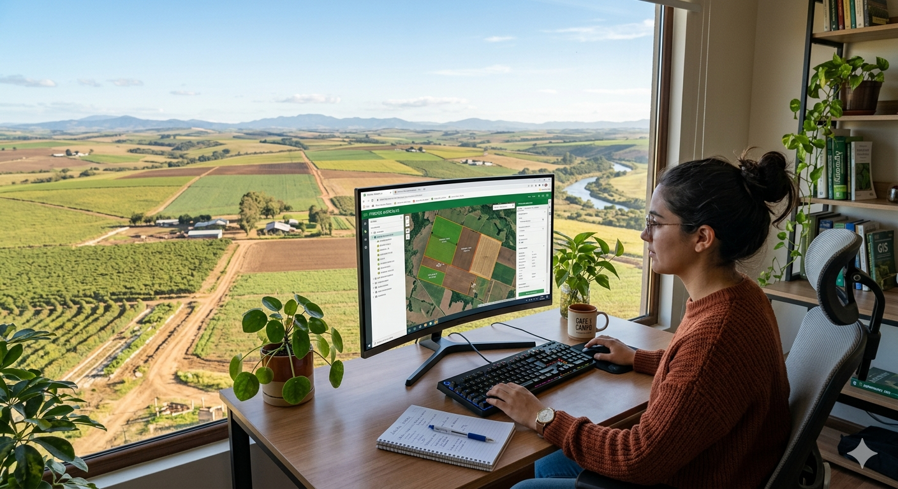
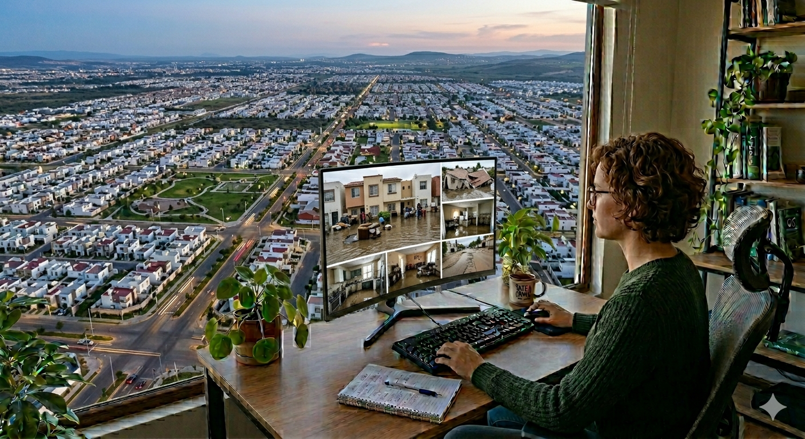

Monitoreo de la exposición de la cartera agrícola de predios vigentes AgroGeo.

Monitoreo de la exposición de la cartera agrícola de predios vigentes AgroGeo.
Monitoreo de la exposición de las pólizas patrimoniales vigentes de seguro directo.

Monitoreo de la exposición de la cartera hipotecaria vigente.